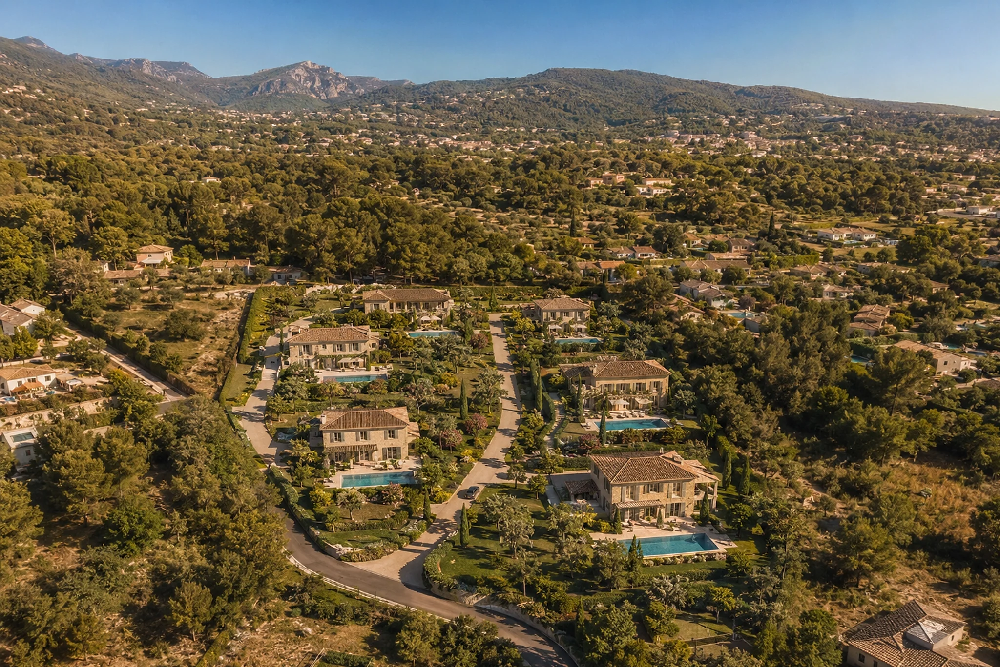
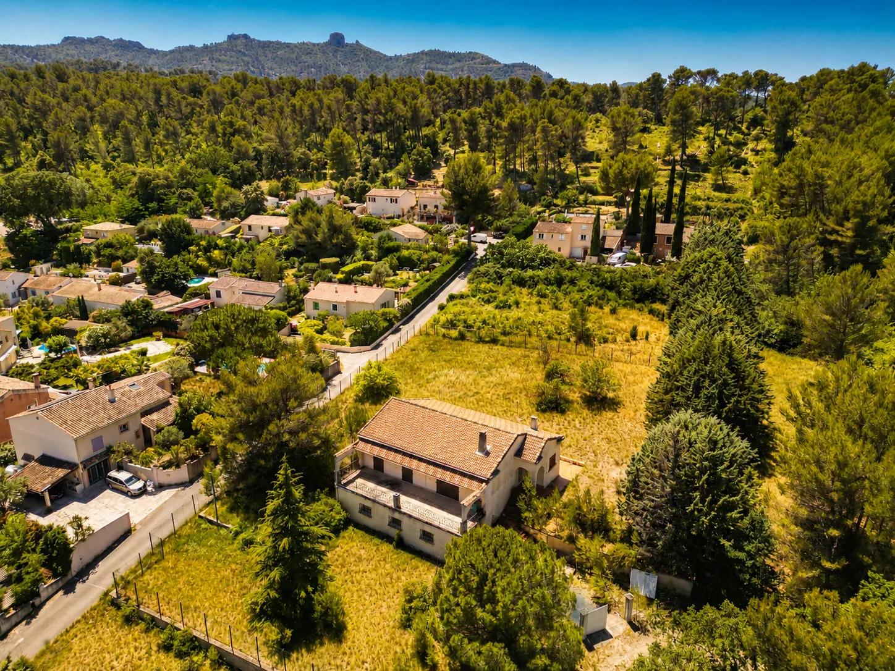
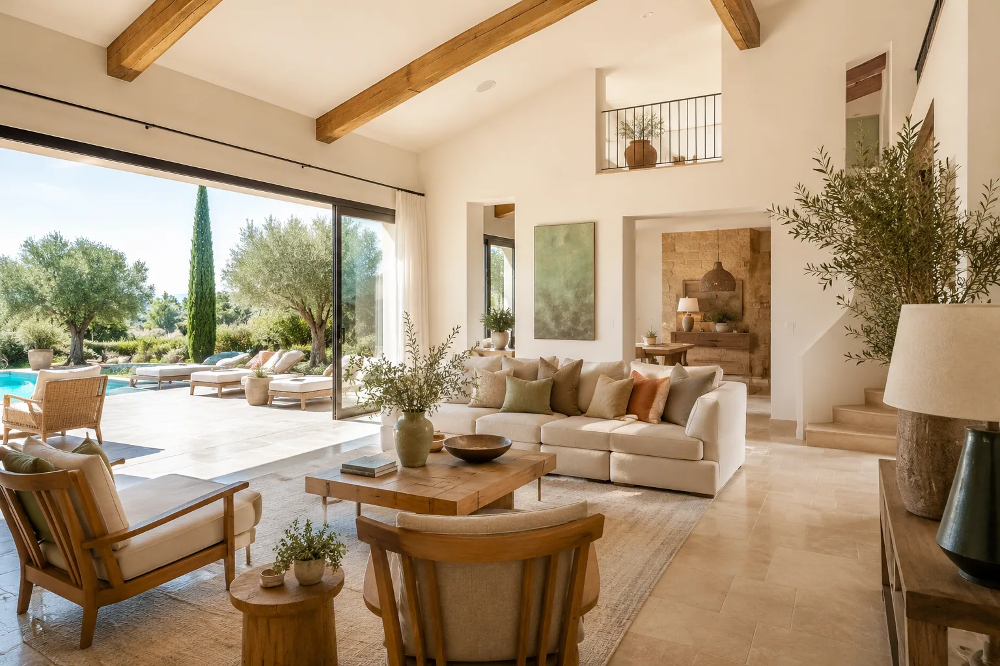

Le Projet
Un lotissement d'exception en zone UD1
Sur une emprise totale de 7 876 m², Le Clos des Zinnias propose 8 lots à bâtir de 500 à 1133 m², en zone UD1 du PLU de Gardanne. Le terrain présente une douce pente Nord-Est offrant à chaque parcelle des vues dégagées vers la Sainte-Victoire et les collines provençales.
Permis d'Aménager : PA n° 013 041 22 K0001, délivré le 18/10/2022 — PA Modificatif approuvé le 03 avril 2026.
Maîtrise d'ouvrage : PONTHIEU DÉVELOPPEMENT HOLDING.
Géomètre-Expert : Julien BOULAY (réf. 4988).
Architecte : GROOVE ARCHITECTURE — Nastya Sanchez.
Cadastre : Section CB n° 112, 113 et 118 partie.

Tout viabilisé avant la vente
Chaque lot est livré entièrement raccordé et prêt à construire.
Voirie
Chaussée 5 m réaménagée depuis la RD58, trottoir piéton de 1,5 m le long de la voie privée.
Eaux usées
Collecteur gravitaire Ø200 mm, branchement individuel Ø125 mm par lot.
Eaux pluviales
Bassin de rétention souterrain de 102,6 m³ (blocs NIDAPLAST) pour la gestion des eaux de pluie.
Eau potable
Conduite 20/32 en polyéthylène, regard de comptage individuel en limite de chaque lot.
Électricité BT
Réseau basse tension en câbles souterrains, coffrets compteurs implantés en limite de propriété.
Téléphone & fibre
Fourreaux souterrains et chambres de tirage pour le raccordement télécom de chaque lot.

Au cœur de la Provence
Les grandes étapes
Permis d'Aménager délivré
Obtention du PA n° 013 041 22 K0001 auprès de la commune de Gardanne.
PA Modificatif approuvé
Validation du permis d'aménager modificatif, affinant l'implantation des lots.
Début des travaux de viabilisation
Lancement de la voirie, des réseaux et des aménagements paysagers.
Livraison des lots viabilisés
Remise des terrains prêts à construire — signature de l'acte authentique.

Imaginez votre intérieur
Volumes généreux, baies vitrées ouvertes sur le jardin, matériaux nobles et lumière naturelle : l'architecture provençale contemporaine sublime chaque instant. Chaque acquéreur conçoit sa villa dans le respect du règlement de lotissement, pour un ensemble harmonieux et préservé.
Constructibilité par lot
| Lot | Surface | Emprise sol max (30 %) | SDP maxi | Espaces libres min (35 %) |
|---|---|---|---|---|
| 1 | 1133 m² | 340 m² | 200 m² | 469 m² |
| 2 | 861 m² | 258 m² | 200 m² | 357 m² |
| 3 | 703 m² | 211 m² | 200 m² | 290 m² |
| 4 | 500 m² | 150 m² | 200 m² | 207 m² |
| 5 | 637 m² | 191 m² | 200 m² | 263 m² |
| 6 | 704 m² | 211 m² | 200 m² | 291 m² |
| 7 | 782 m² | 235 m² | 200 m² | 324 m² |
| 8 | 600 m² | 180 m² | 200 m² | 248 m² |
Clôtures sur voie : mur bahut 60 cm + grillage 120 cm noir (réalisées par l'Aménageur).
Clôtures mitoyennes : grillage 180 cm noir (à la charge de l'acquéreur) + haie vive de 2 m maximum.